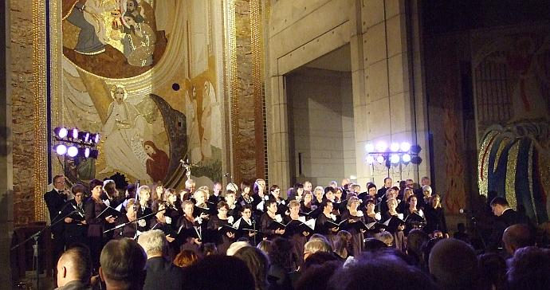
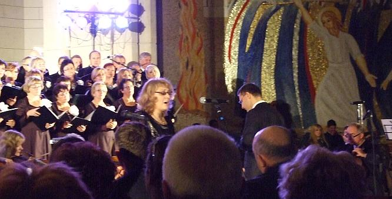
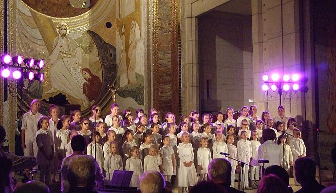

A tymczasem w Cameracie...
.
2014-10-20
Spotykamy się godzinę wcześniej na krótkiej próbie. A teraz czekamy na koncert.
wraz z solistami: Izabelą Szota oraz Wiesławem Popiołkiem,

schole dziecięce „DEUS EST!” z Wieliczki, Strumian i Pawlikowic,

Chór Dziewczęcy „Ziarenko”, Orkiestra Dęta „Podstolice",


© Stowarzyszenie Muzyczne Chór Camerata Wieliczka
Projekt i wykonanie:  Prowadzenie strony: Małgorzata Wysocka-Cebula
Prowadzenie strony: Małgorzata Wysocka-Cebula